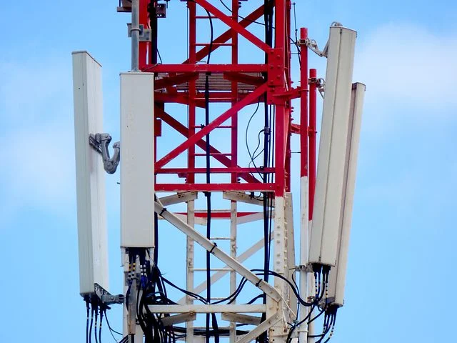
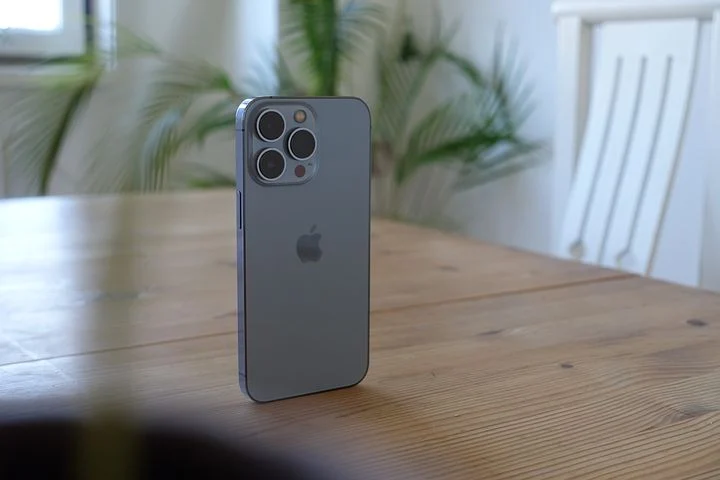

Aspect Économique
petit rappel:
Le déploiement de la 5G
 La première entreprise à avoir grandement développé la 5G est l’entreprise chinoise Huawei. Cependant, les Etats-Unis appellent à une concurrence déloyale, Huawei étant soutenu par le gouvernement chinois et accuse l’entreprise de vouloir espionner les pays chez qui sa 5G est installée, et c’est alors qu’en 2018, le président américain Donald Trump interdit Huawei sur son territoire. Cependant après avoir commencé ses tests et son déploiement dans la majeure partie du monde, Huawei est devenu en 2019 le premier groupe d’électronique mondial en chiffre d'affaires devant Samsung et Apple, ce qui montre le bénéfice qu’une entreprise peut tirer de l’installation d’antenne pour de simple test sachant que ,sur beaucoup de territoires industrialisés, l’installation d’antennes 5G avait déjà été commencé par d’autres entreprises. En France par exemple, l’Arcep avait déjà autorisé Orange à tester la technologie 5G dans la ville de Belfort en septembre 2015 puis l'Institut de recherche technologique B-com à faire de même à Rennes. Cependant, avec les affaires politiques autour du blocus contre Huawei, Bouygues Telecom va être forcé de retirer 3000 antennes Huawei du territoire français, un impact qui va toucher Bouygues et SFR, les deux compagnies utilisant les antennes de Huawei. En 2019 les États-Unis favorisent l'entreprise américaine Cisco Systems face aux leaders actuels sur le marché, Huawei, ZTE (fournisseur chinois), Nokia et Ericsson (fournisseur venant de l’union européenne).
L’utilisation de la 5G pour de nouvelles inventions
La 5G, au-delà de ce que son déploiement peut rapporter à l'entreprise qui l’effectue, apporte aussi à l'économie en général. En effet, avec la 5G il est possible de rendre les objets connectés et surtout de rendre autonome les voitures. De ce fait, cela facilite l’implémentation et la fabrication de ces voitures sur le marché, actuellement contrôlé par Google et Tesla. De nombreux acteurs voient l’arrivée de la 5G d’un bon oeil : avec le développement de celle ci et l’arrivée de “l’hyperconnectivité des objets”, de nombreuses application ont la possibilité de voir le jour dans des domaines variés comme des diagnostic à distance dans le domaine de la santé, des réseaux électriques intelligents permettant la visualisation et gestion en direct de la consommation en électricité du consommateur, l’amélioration du télétravail pour toutes les entreprises capable de l’utiliser à grande échelle et sans grand impact sur le travail produit ou encore la possibilité pour les entreprises travaillant dans la sécurité d’améliorer leur services avec une gestion plus faciles de données comme la télésurveillance les flux de personnes et de véhicules. La 5G permettant un accès plus grand et plus rapide à internet partout, dans les avions, les trains et toutes les formes de déplacement de nouvelles applications vont pouvoir se développer pour répondre à des besoins qui étaient impossibles à satisfaire et permettre l’utilisation d'applications déjà existantes alors que cela était quasiment impossible. De plus, avec la crise du covid et l’augmentation du télétravail, la 5G va pouvoir faciliter le travail à distance et le permettre dans des domaines qui étaient impossibles comme la médecine avec des opérations à distances. Les entreprises utilisant des robots pour leur production vont aussi pouvoir bénéficier de la 5G pour rendre leurs robots sans fils et tous connectés pour un meilleur rendement.
La 5G et les téléphones portables
L’un des principaux outils utilisés pour ce qui est de l’accès à internet reste malgré tout le téléphone portable. Avec l’arrivée de la 5G, les entreprises fabriquant les téléphones ,telles que Samsung ou Xiaomi, et celles fournissant les accès à internet, comme SFR ou Free, voient dans le déploiement de la 5G une nouvelle opportunité de faire du chiffre. Ainsi Samsung est la première entreprise à commercialiser un smartphone équipé de la technologie 5G, le Samsung Galaxy S10 5G, en février 2019, suivi par Apple qui, en Octobre 2020 lance l’iPhone 12, son premier téléphone avec la 5G. Quant au fournisseur d’accès internet en France, les plus grands ont lancé leur forfait presque tous en même temps : au début du mois de Décembre 2020, Bouygues et SFR lancent leur forfaits, suivis de près par Orange, puis par Free à la fin du mois. Pour l’instant, les forfaits 5G sont assez chers : entre 20 et 60 euros par mois pour des forfaits allant de 70 à 200 Go d’internet. Cependant des fournisseurs proposent des tarifs réduits pour des clients possédant leur box, comme Bouygues ou Free.
Conclusion
La 5G profite à l'économie de trois grandes manières : premièrement, son déploiement offre un avantage économique important à l’entreprise qui l’effectue, bien que cela relève aussi du domaine politique avec les tensions entre les États-Unis et la Chine, Deuxièmement, la 5G offre énormément de possibilités pour se développer, autant pour les entreprises et services déjà existant que pour des marchés sur le point d’être créés ou qui viennent à peine de l’être. Troisièmement, les entreprises créant des téléphones et fournissant des accès internet ont un nouveau produit à offrir : des forfaits donnant accès à la 5G et des téléphones pouvant la capter.